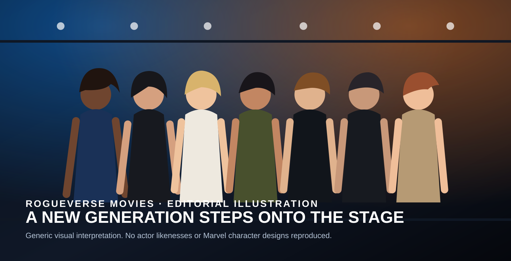

OUR CULTURE / MOVIES / CASTING • AUGUST 17, 2026
Marvel Finally Reveals Its New X-Men Cast, and Mister Sinister May Tell Us Everything About the Reboot
Sadie Sink, Kit Connor, Christopher Abbott, Inde Navarrette, Maya Boyd, Samara Weaving and Adam Driver headline Marvel Studios’ new mutant era, with the film currently scheduled for May 5, 2028.

Marvel Studios has finally begun putting faces to its new generation of mutants.
At Disney’s D23 fan event in Anaheim, Marvel Studios president Kevin Feige unveiled the principal cast of the studio’s upcoming X-Men film. The confirmed lineup includes Sadie Sink as Jean Grey, Kit Connor as Scott Summers/Cyclops, Christopher Abbott as Professor Charles Xavier, Inde Navarrette as Rogue, Maya Boyd as Storm, Samara Weaving as Emma Frost, and Adam Driver as Mister Sinister.
The movie is being directed by Jake Schreier, who previously directed Marvel’s Thunderbolts*. Current reporting places the theatrical release on May 5, 2028.
Those are the confirmed facts. The more interesting question is what this particular group suggests about the kind of X-Men movie Marvel wants to build.
Jean Grey and Cyclops get another beginning
Jean Grey and Cyclops are foundational X-Men characters, but their film history has often been overshadowed by other personalities, especially Wolverine. Casting Sadie Sink and Kit Connor gives Marvel a chance to rebuild that relationship without treating Scott Summers as an obstacle standing between the audience and someone else’s story.
Jean is more than the Dark Phoenix story, and Cyclops is more than a visor and a leadership title. In the comics, Scott is frequently one of mutantkind’s most consequential field leaders, while Jean’s telepathy, telekinesis and empathy place her at the emotional center of many of the team’s defining conflicts.
A successful reboot does not need to rush either character toward their most famous plot points. It needs to make audiences care about them first.
Storm deserves a bigger cinematic role
Maya Boyd’s casting as Ororo Munroe gives Marvel another opportunity to correct one of the recurring limitations of the previous X-Men films.
Storm is not simply “the weather mutant.” Across decades of comics, she has been an X-Men leader, a diplomat, a warrior, a queen and one of Marvel’s most important Black superheroes. The films have shown her power, but they have rarely allowed the full scale of her authority and personality to drive the story.
If Marvel treats Storm as a future leader rather than background firepower, this version of the team could feel immediately different.
Rogue can finally become more than her fear
Inde Navarrette steps into a role strongly associated with Anna Paquin’s portrayal in the Fox films. That version of Rogue emphasized the tragedy of physical contact and the terror of accidentally absorbing another person’s memories and abilities.
That emotional foundation matters, but comic-book Rogue eventually becomes far more confident, combative and charismatic. She can be funny, reckless, fiercely loyal and physically formidable depending on the era. Marvel has decades of material available if it wants to let her grow beyond the frightened teenager audiences first met in 2000.
Emma Frost makes the team more complicated
Samara Weaving’s Emma Frost is one of the most interesting inclusions because Emma rarely fits comfortably into a simple hero-villain box.
She has been an adversary, a member of the Hellfire Club, a teacher, an X-Man and a mutant political leader. She is also a powerful telepath whose priorities do not always align with Charles Xavier’s.
That means Marvel can create tension inside mutant society before Magneto even enters the room. Xavier may believe in coexistence. Emma often approaches survival with a sharper edge.
Mister Sinister may be the most revealing casting choice
The biggest clue about the film’s direction may be Adam Driver’s role as Mister Sinister.
Sinister is deeply connected to mutant genetics, experimentation, bloodlines and engineered evolution. His comic history repeatedly intersects with the Summers and Grey families, making his presence particularly notable in a movie that already includes Jean Grey and Cyclops.
That does not mean Marvel has revealed the plot. It does mean that choosing Sinister opens doors the X-Men movies have barely explored.
One possibility is that the villain could help Marvel address a question the MCU eventually has to confront: where has a growing mutant population been during the franchise’s previous history?
Sinister does not need to have created mutants for that idea to work. He could have been studying them, tracking them, collecting genetic material or operating around communities that remained hidden from the larger world. That is analysis, not confirmed story information, but it fits the themes historically associated with the character.
Where are Wolverine and Magneto?
Two of the most recognizable names in X-Men cinema were not part of the announced lineup: Wolverine and Magneto.
Their absence from this reveal does not prove they are absent from the movie. Additional casting may still be announced. But Marvel beginning its public rollout without centering either character could be meaningful.
Fox’s X-Men films increasingly revolved around Hugh Jackman’s Wolverine, while the ideological conflict between Xavier and Magneto dominated multiple generations of movies. Both worked because the actors involved were excellent. They also consumed enormous narrative space.
Holding those characters back, even temporarily, would allow Cyclops, Jean, Storm, Rogue and Emma to establish the identity of this new team before the franchise returns to its most familiar icons.
What Marvel still has not announced
As of August 17, Marvel has not used this cast reveal to announce new reboot actors for Wolverine, Magneto, Beast, Gambit, Nightcrawler, Kitty Pryde, Iceman, Colossus, Jubilee or several other major mutants.
Marvel has also not publicly laid out the film’s complete story, the size of Xavier’s school, the wider state of mutant society or how this team connects to the broader MCU.
Those gaps matter. A cast announcement tells us who is entering the story. It does not yet tell us the world they are entering.
The biggest challenge is identity, not casting
The MCU already contains Avengers, cosmic heroes, street-level vigilantes, Wakandan institutions, supernatural characters and the Fantastic Four. The X-Men cannot simply become another color-coded superhero team that meets in a headquarters before the third-act battle.
At its best, X-Men is about identity, belonging, prejudice, community, fear and competing ideas about survival. The powers make the metaphor spectacular, but the social world around those powers is what makes the franchise distinct.
Xavier’s school should feel like a place people live, argue, learn and form relationships. Mutants should feel like a community rather than a roster.
If Marvel gets that right, the action can become enormous later.
The RogueVerse take
This announcement is encouraging because Marvel is not simply rebuilding the Fox films actor-for-actor.
Jean Grey, Cyclops, Storm, Rogue and Professor X provide a recognizable foundation. Emma Frost introduces ideological friction. Mister Sinister introduces a corner of mutant mythology the movies have barely touched.
And at least for this first announcement, Wolverine is not standing in the center of the poster.
That gives the actual team room to become the X-Men before the biggest legends inevitably arrive.
The real test is not whether Marvel can cast the X-Men. It is whether Marvel can make mutantkind feel like a world of its own.